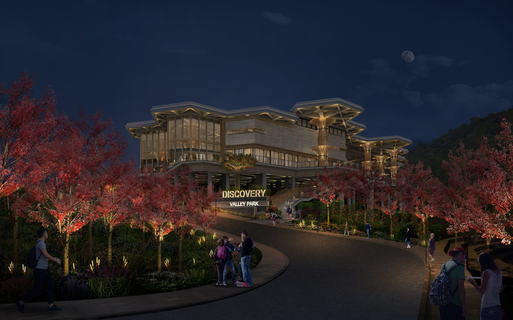
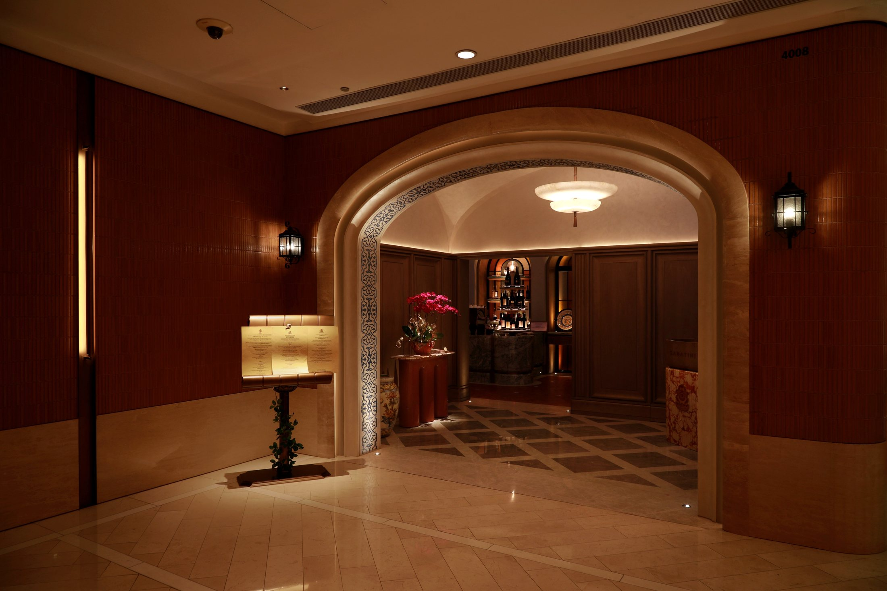

Design Excellence
Creating timeless, expressive and human-centred lighting designs that inspire, endure and strengthen spatial identity.
Architectural Lighting Consultancy
RADA ROUGE is an architectural lighting consultancy dedicated to transforming architecture through the art and science of light. Every beam, shadow and subtle contrast is intentionally crafted to enhance form, reveal spatial depth and create meaningful experiences.
About RADA ROUGE
RADA ROUGE Lighting Design Consultancy works with architects, interior designers and developers to translate visionary concepts into practical, measurable lighting solutions across architectural exterior lighting, hotel environments, luxury residences and large-scale mixed-use developments.
Lighting design is far more than illumination. It shapes perception, evokes emotion and defines the identity of a space.
By integrating artistic sensibility with engineering excellence, every design is made visually compelling, technically refined and purpose-driven.
Mission & Philosophy
RADA ROUGE sees light as a language of architecture. The studio harnesses the power of light with precision and purpose, transforming creative visions into intelligent, meaningful lighting experiences.
Creating timeless, expressive and human-centred lighting designs that inspire, endure and strengthen spatial identity.
Integrating advanced lighting systems, smart controls and sustainable technologies to achieve optimal performance and efficiency.
Working closely with architects, designers and developers with unity and trust, refining ideas to achieve harmony and precision.

Founder & Design Director
Ada Wong is an architectural lighting designer with over eleven years of experience crafting refined lighting environments across luxury hospitality, high-end residential, commercial and mixed-use developments.
Born in Hong Kong, Ada studied Interior Design at the Hong Kong University School of Professional and Continuing Education and later earned a degree in Architectural Engineering Management from Birmingham City University in the United Kingdom.
Her journey spans AB Concept, Lightlinks & Isometrix and the Hong Kong office of lighting master Tino Kwan, where she contributed to prestigious projects across global markets.
Services
The services below follow the company profile, covering design concept, drawings, specifications, coordination and commissioning.
Lighting concept, mood board and facade strategy, developed to shape the lighting direction of architecture, interior and landscape environments.
Lighting technical drawings, detail drawings, fitting specifications, custom light fittings design and installation details.
Lighting control specifications, project coordination, on-site coordination, dimming scene table, testing and commissioning, and final defect review.
Workflow
The workflow follows the sequence in the company profile: understanding needs, developing concepts, producing technical documentation, coordinating site progress and finalising the lighting scenes.
Understanding customer needs through consultation.
Developing suitable design solutions based on project needs.
Determining the design and developing lighting technical drawings.
Preparing the lighting technical documents required for the project.
Coordinating on-site construction and installation progress.
Developing dimming scene tables and completing on-site testing, commissioning and final defect report.
Selected Projects
Each project below uses images and descriptions from the PPT profile. The homepage can later be split into a dedicated project archive when more material is ready.

The lighting design dissolves the boundary between interior and exterior, using accent lighting, dynamic sky imagery, custom decorative luminaires, RGBW effects and intelligent dimming control.

Ambient, accent and indirect lighting create a refined multifunctional venue, with cove lighting, adjustable track lighting and integrated dimming scenes for banquets and celebrations.

A warm and serene residential lighting concept using indirect light, integrated luminaires, landscape accents and decorative lanterns to balance architecture, nature and emotion.

Integrated indirect linear lighting expresses the identity of a large-scale headquarters, revealing facade details while balancing site safety, guidance and environmental integration.

Functional and decorative lighting support commercial spaces, residential use, outdoor sports venues and driving roads, combining floodlights, light poles, linear strips and in-ground uplights.

A delicate dialogue between architecture, landscape and nature, softly accentuating roof geometry, columns, materiality, flowering trees and pathway guidance.

Layered indirect cove lighting, accent downlights, wall washers, wall lamps, candlelight and table lamps create a romantic fine dining atmosphere with adaptable dimming scenes.

Warm lighting, dimmable high-power spotlights and intimate table lamp moments create a relaxed home-like atmosphere around the void, artwork and leisure areas.

Linear light strips, recessed fixtures and square walkway lights form a concise and elegant strategy where light is visible without exposing the presence of fixtures.

Light strips and recessed ceiling lights create a comfortable dining atmosphere, enhancing architectural details with concealed mirrored-finish light shields.
Project Types
The project library from the company profile can later be arranged by sector, location and year.
Andaz Hotel, V Walk Clubhouse, XAVA Restaurants, Sabatini IFC and Wyndham Hotel Ballroom.
Deep Water Bay No.8, EDEN TAMAN DUTA and high-end residential interior, facade and landscape lighting.
Commercial interiors, outdoor sport centres, sales offices and development environments.
Architectural facade expression, landscape hierarchy, pathway comfort and glare-controlled outdoor lighting.
Get In Touch
Available for architectural exterior lighting, hospitality environments, luxury residences, landscape lighting and mixed-use developments.
hello@radarouge.com Instagram radarouge.com